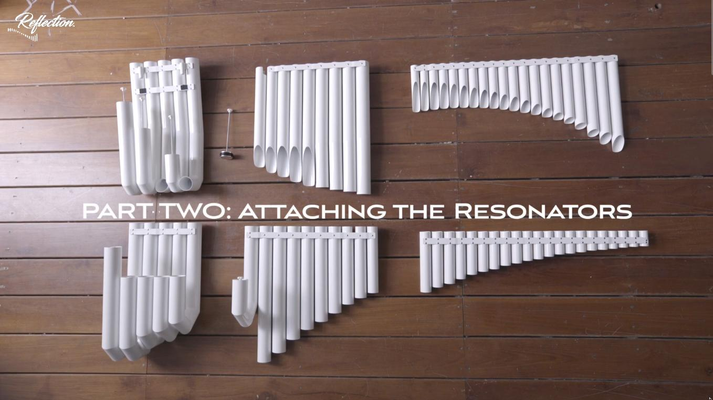

Marimba Solista
Rider técnico para presentaciones acústicas de marimba.
Descargar PDFInformación para productores, técnicos de sonido y programadores de eventos.
Riders técnicos por formato
Rider técnico para presentaciones acústicas de marimba.
Descargar PDFRider técnico para presentaciones de música electrónica.
Descargar PDFRider técnico para presentaciones de marimba + electrónica.
Descargar PDF| Modelo | Marimba Majestic Reflection |
|---|---|
| Dimensiones | 2,5m x 1,2m x 0,9m (aprox.) |
| Peso | 120 kg aprox. |
| Componentes | 6 tubos, 4 juegos de teclas, 2 soportes laterales, largueros reforzados |
| Transporte | Requiere furgón especializado con acceso amplio |




Setup de Meng-Âmok y formato mixto


| Montaje | 45-60 minutos según formato |
|---|---|
| Desmontaje | 50 minutos |
| Temperatura | 18°-24°C recomendado |
| Iluminación | Ajustable según programa |